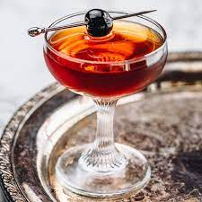

The Olympus Manhattan

Not too much you can say about this one. Just a taste of style to class up the place, any place that might be.
Ingredients
-2 dashes Angostura bitters
STEPS
Add the rye whiskey, sweet vermouth and bitters into a glass and stir.
Strain into a chilled coupe.
Garnish with a brandied cherry or a lemon twist.
Homepage